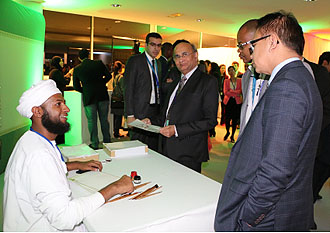
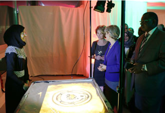

UNESCO Headquarters, Paris, France 2015


November 09, 2015.
During the 38th General Conference of UNESCO in Paris, the Permanent Delegation of the Sultanate to UNESCO held a reception on the occasion of Oman’s 45th National Day under the auspices of Dr Madeeha bint Ahmed Al Shaybaniyah, Minister of Education, in the presence of Irina Bokova, UNESCO Director-General, and HE Dr Samira bint Mohamed al Moosa, Sultanate’s Permanent Delegate to UNESCO.


Director-General Bokova praised the efforts of the Sultanate for its policies promoting education, science and culture, along with its continuous support of the international organization contributing to its ability to play its required role.
Dr. Al Moosa stated that the Sultanate has always held the culture of peace and sustainable development among its most important goals. She also extolled the efforts of HM Sultan Qaboos to establish peace and harmony at home, making Oman an example of stability and progress. She explained further that Oman’s policies, based on mutual and peaceful respect within cultures while preserving Omani traditiions, enable it to play a role facilitating dialogue and seeking diplomatic solutions to problems among the various areas of the world where there is conflict.

The emblem of the exhibition “Tolerance, Understanding, Coexistence: Oman’s message of Islam” was presented to UNESCO in the form of a glass sculpture. It symbolizes the diversity of religions and cultures in the world, and is sybolic of the Sultanate´s project promoting tolerance, mutual understanding, and peace among peoples.